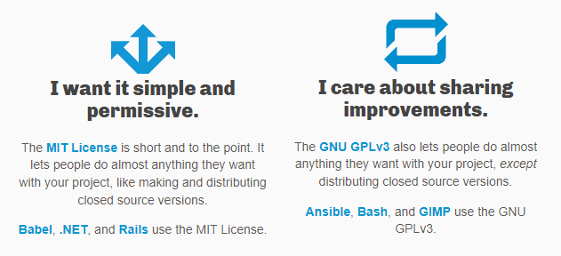

Increasing open source adoption at the British Geological Survey
Dr John A Stevenson
/
@volcan01010
:emoji: Warning: bias ahead :emoji:
About open source software
### What does open source mean? + Source code is written by developers. + Binary code is run by computers. ```sql Java / C / C++ / Fortran: + write -> compile -> share -> run Python / JavaScript / R: + write -> share -> compile -> run ```
### Open source licences 
### How open source software is built <img src="images/xkcd_dependency.png" width=100 alt="pygeoapi logo"> [Add CQL to PostgreSQL provider (via pygeofilter and sqlalchemy)](https://github.com/geopython/pygeoapi/pull/964)
### The future of scientific publishing? <img src="images/xkcd_dependency.png" width=100 alt="JOSS logo"> [PyVOLCANS in the Journal of Open Source Software]( https://joss.theoj.org/papers/10.21105/joss.03649)
Addressing enterprise concerns
Support
Get some logos in here.
Security
Use Nexus screenshot here.
Integration
STANDARDS!!!!!!
Open source alternatives to proprietary tools
### Spatial Data |Proprietary|FOSS| |---|---| |Oracle Spatial|PostGIS| |Arc server|Geoserver, Mapserver, pygeoapi| |FME|ogr2ogr, etlhelper, QGIS processing|
### Analysis and research |Proprietary|FOSS| |---|---| |ArcGIS | QGIS | |ArcPy | GRASS, geopandas, R-spatial| |Matlab| Python, R| |CorelDraw, Illustrator|Inkscape| |Photoshop|GIMP|
### Business | Proprietary | FOSS | |---|---| | Microsoft Office | LibreOffice + NextCloud | | Microsoft Teams | Matrix / Element | | Microsoft Windows | Ubuntu Linux |
Open source in the news